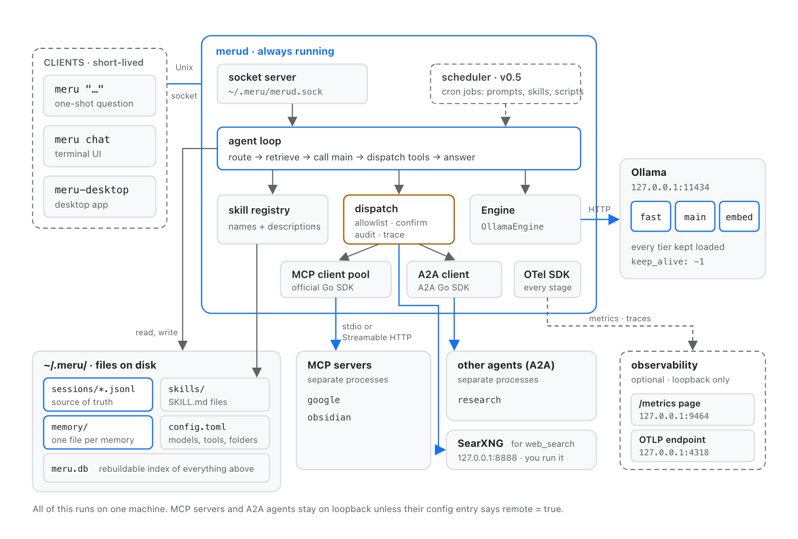
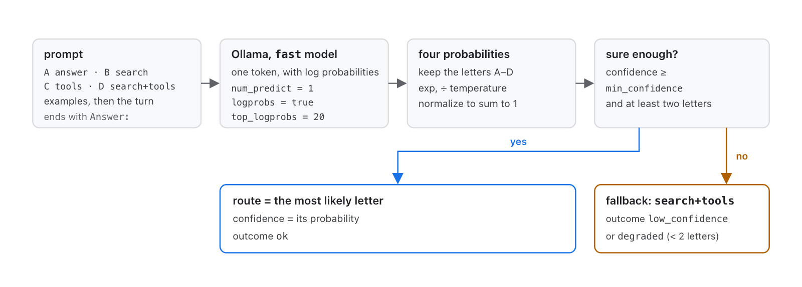
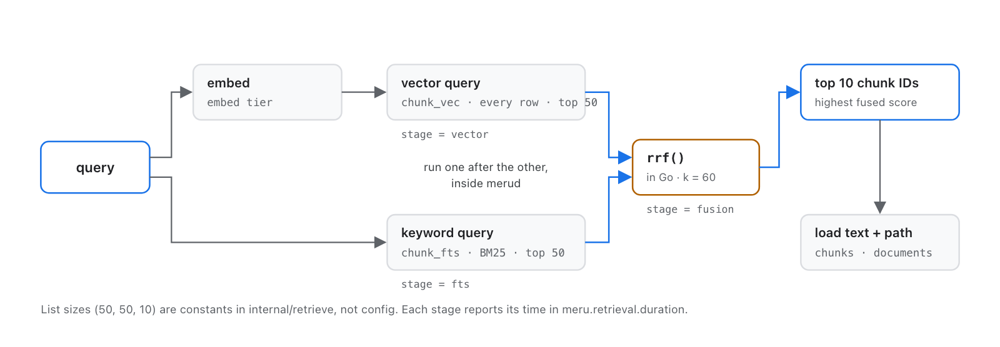
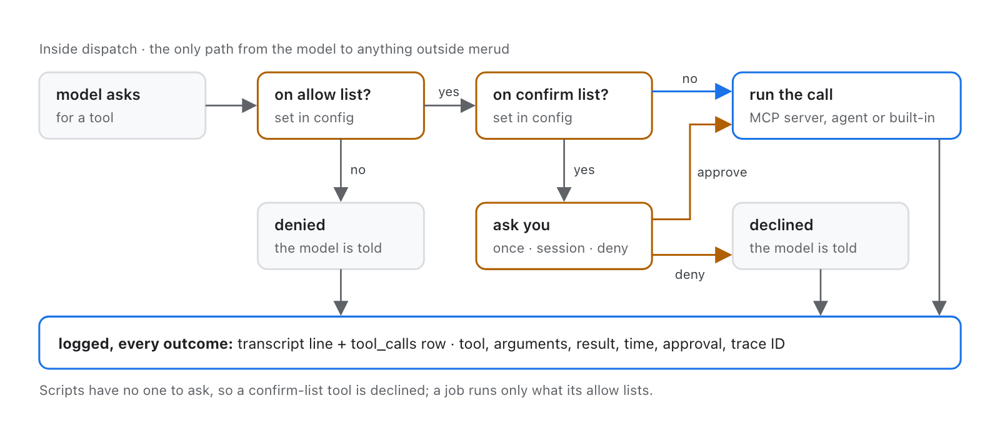
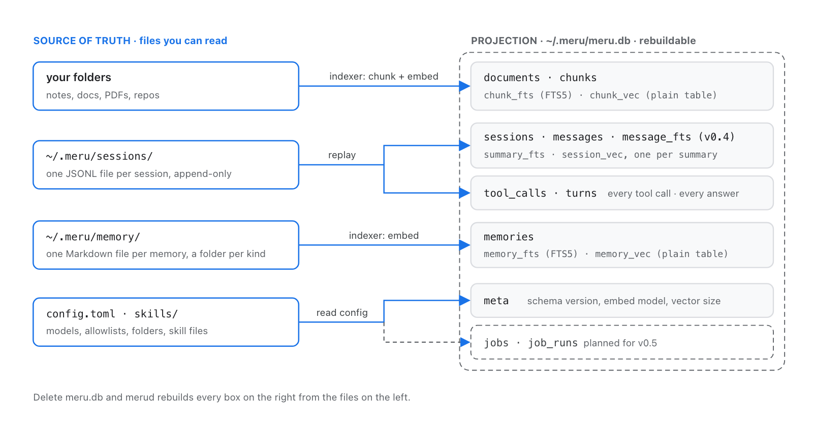

Meru मेरु
How it's built, and how to build it with us.
In some Eastern traditions, Meru is the cosmic mountain that the sun, moon and stars turn around.
v0.4.18 · for developers · October 2026
github.com/aarora79/meru
Scan for the code
The project
A local AI assistant, written in Go, built in the open
Two programs
merud, a daemon that keeps models warm and does the work, and meru, a thin client over a Unix socket.
Three clients
meru "…" for one question, meru chat in a terminal, and Meru.app, a Wails v3 window.
Local models
Ollama on loopback runs every model. Meru's code has no path to a cloud model.
Why Go
Single native binaries with no cgo in merud, cheap goroutines for a daemon, and code a Python developer can read.
The size
32 internal packages, 6 commands, a coding note per package and 26 notes on Go itself.
The licence
Apache 2.0. Nothing for sale, anywhere.
How we decide
Simple wins every time
- When two designs both work, pick the one with fewer moving parts.
- A function beats a type. A struct beats an interface. An interface appears with its second implementation.
- One way to do each thing: one
dispatchpath, one store, one config file. - No speculative flags, options or plugin points.
- The standard library first, boring libraries second.
- Add complexity only when a measurement or a second real use asks for it, and say which in the PR.
- Write for a reader new to Go: every package, file and function explains itself.
ARCHITECTURE.mdis the contract; change it before the code.
The rules that don't bend
Five non-negotiables, enforced in CI
| Rule | What it means in code |
|---|---|
| No cloud-model code path | No HTTP client for a model provider, even behind a flag. Model traffic goes to Ollama on loopback. |
| No telemetry off the machine | OpenTelemetry exports to loopback only; no update checks, no crash reports. |
| Deny by default | A new MCP server or A2A agent offers nothing until config allowlists it. |
Every tool call through dispatch | One path logs each call to tool_calls and the transcript. Never a second one. |
| Nothing for sale | No pricing, paid licence or sponsor link anywhere in the project. |
internal/policy holds the tests: deny-lists of hosts and imports, allowed URLs, and the thin-client rules.
Architecture

A daemon, thin clients and files you own
merudowns the models, the store, the tools and the agent loop.- Clients hold no model or store logic, and policy tests keep it so.
- Files under
~/.meruare the truth;meru.dbis a rebuildable index.
The harness
One question, end to end, in merud
- RequestOne JSON line on the Unix socket: the question, its scope, any pictures.
- HistoryThe session's last turns, trimmed to fit.
- RouteThe fast model picks one of four routes with one token.
- Search firstFiles, memories and past chats; the web when the question asks for it.
- PromptBuilt within a budget, stable parts first so Ollama reuses its cache.
- RoundsThe main model calls tools, up to 8 rounds, the last with none.
dispatchEach call allowed, fenced, approved, logged.- AnswerStreams to the client; checks for claims no tool backs; written to the transcript.
A hand-written loop with no agent framework. docs/architecture/harness.md walks it function by function.
Routing

A router that writes one letter
- The fast model labels the four routes A to D and writes one token.
- Ollama's log probabilities give a confidence, so a small model can't garble the choice.
- Labelled questions in
testdata/;make router-evalscores a change.
Retrieval

Search by meaning and by words
- Vectors and BM25 keyword search, 50 each, merged by reciprocal-rank fusion.
- SQLite through
ncruces/go-sqlite3: no cgo, with vec1 and FTS5 bundled. - Text and images in one 768-number space with EmbeddingGemma 2.
Tools

dispatch: the one path to a tool
- MCP servers, A2A agents,
[[commands]]and 16 built-in tools. - Allowlist, scope fence, approval (once, session, deny), audit, metrics.
- An incognito chat still gets a
tool_callsrow, with no arguments or result.
Connectors
Meru installs and runs the servers it needs
- A manifest per connector, compiled into
merud: Obsidian, Google, SearXNG, Ollama and Whisper. - Every pin is exact: package versions, image digests, SHA-256 per download. A policy test refuses
latest. - A supervisor per connector installs on enable, starts on use, stops when idle, and backs off after a crash.
Five kinds
stdioandhttp: MCP serverscontainer: SearXNG in Dockerservice: a program speaking plain HTTP, such aswhisper-serverdependency: Ollama, watched, never installed
Storage

Files are the truth; the database is an index
- JSONL transcripts, Markdown memories, one
config.toml. - Delete
meru.dband Meru rebuilds it. - A new embedding model drops vectors, keeps text, and re-embeds.
Observability
Measured, and the numbers stay home
- OpenTelemetry metrics and traces for every stage, exported to loopback only;
merudrefuses any other endpoint. - A
/metricspage for a Prometheus you run, and a Usage screen in both clients, drawn frommeru.db. - Question and answer text stay out of spans unless
capture_content = true.
Some of the metrics
meru.turn.durationby route, source and outcomemeru.route.decisions: how often the router is unsuremeru.tool.callsby kind, server, tool and outcomemeru.retrieval.durationby stagemeru.speech.durationby model and outcome
Attributes come from small fixed sets: never IDs, paths or text.
A worked example
Voice in a day: measure first, then build
The test
- Gemma 4 in Ollama heard well, but at 7.4 GB pushed a model out: about 5 s to a spoken question's first word.
- As a chat model it answered "explain why the sky is blue" instead of writing it down.
- Whisper: 445 to 890 MB in its own process, under half a second for 26 s of speech.
The build, six PRs
- Design in ARCHITECTURE.md first
- CI builds
whisper-serverfrom pinned source, with a build attestation - A
serviceconnector kind, behind a random path per start - A
transcribeop, then the microphone in Meru.app
How we work
Every change carries its docs and its checks
Contract first
Change ARCHITECTURE.md, then carry it into the 300, 200 and 100 pages and their figures.
Explain the code
A PR that changes a package updates its note in docs/coding-notes/, or it doesn't merge.
make check
Format, vet, staticcheck, race tests, end-to-end tests, five-platform builds, govulncheck, gosec, gitleaks.
Reviewed by personas
The pr-review skill reads each PR as security, SRE, Go and architecture reviewers.
Plain prose
Docs, comments and commit messages follow the writing skill: short words, active voice.
Releases
make release builds, checks and publishes; release notes come from a skill.
Contribute
We build in the open, and we're happy to accept contributions
Get going
git clone https://github.com/aarora79/merumake checkgo run ./cmd/merud and go run ./cmd/meru "hello"
Read AGENTS.md, then docs/lld.md, then the coding note for the package you touch. CONTRIBUTING.md has the contributor agreement.
From the issue list
- #150 Live transcription
- #84 Meru end to end on Ubuntu
- #85 Meru end to end on Windows
- #77 Python examples of
merudas an agent harness - #134 Metrics for the fast and embed model calls
The first outside contribution, #139, is already in review.
Come build with us
Your assistant, your machine, your data.
We build in the open, and we're happy to accept contributions: see the issue list on GitHub.
github.com/aarora79/meru · aarora79.github.io/meru · Apache License 2.0
github.com/aarora79/meru
Scan for the code